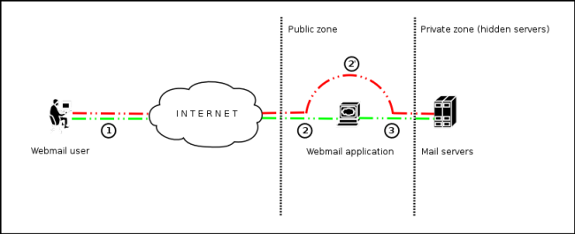

4.8.11 IMAP/SMTP Injection (OTG-INPVAL-011)
Summary
This threat affects all applications that communicate with mail servers (IMAP/SMTP), generally webmail applications. The aim of this test is to verify the capacity to inject arbitrary IMAP/SMTP commands into the mail servers, due to input data not being properly sanitized.
The IMAP/SMTP Injection technique is more effective if the mail server is not directly accessible from Internet. Where full communication with the backend mail server is possible, it is recommended to conduct direct testing.
An IMAP/SMTP Injection makes it possible to access a mail server which otherwise would not be directly accessible from the Internet. In some cases, these internal systems do not have the same level of infrastructure security and hardening that is applied to the front-end web servers. Therefore, mail server results may be more vulnerable to attacks by end users (see the scheme presented in Figure 1).

Figure 1 - Communication with the mail servers using the IMAP/SMTP Injection technique.
Figure 1 depicts the flow of traffic generally seen when using webmail technologies. Step 1 and 2 is the user interacting with the webmail client, whereas step 2 is the tester bypassing the webmail client and interacting with the back-end mail servers directly.
This technique allows a wide variety of actions and attacks. The possibilities depend on the type and scope of injection and the mail server technology being tested.
Some examples of attacks using the IMAP/SMTP Injection technique are:
• Exploitation of vulnerabilities in the IMAP/SMTP protocol
• Application restrictions evasion
• Anti-automation process evasion
• Information leaks
• Relay/SPAM
How to Test
The standard attack patterns are:
• Identifying vulnerable parameters
• Understanding the data flow and deployment structure of the client
• IMAP/SMTP command injection
Identifying vulnerable parameters
In order to detect vulnerable parameters, the tester has to analyze the application's ability in handling input. Input validation testing requires the tester to send bogus, or malicious, requests to the server and analyse the response. In a secure application, the response should be an error with some corresponding action telling the client that something has gone wrong. In a vulnerable application, the malicious request may be processed by the back-end application that will answer with a "HTTP 200 OK" response message.
It is important to note that the requests being sent should match the technology being tested. Sending SQL injection strings for Microsoft SQL server when a MySQL server is being used will result in false positive responses. In this case, sending malicious IMAP commands is modus operandi since IMAP is the underlying protocol being tested.
IMAP special parameters that should be used are:
| click me | click me |
|---|
| On the IMAP server | On the SMTP server |
| Authentication | Emissor e-mail |
| operations with mail boxes (list, read, create, delete, rename) | Destination e-mail |
| operations with messages (read, copy, move, delete) | Subject |
| Disconnection | Message body |
| | Attached files |
In this example, the "mailbox" parameter is being tested by manipulating all requests with the parameter in:
http://<webmail>/src/read_body.php?mailbox=INBOX&passed_id=46106&startMessage=1
The following examples can be used.
• Assign a null value to the parameter:
http://<webmail>/src/read_body.php?mailbox=&passed_id=46106&startMessage=1
• Substitute the value with a random value:
http://<webmail>/src/read_body.php?mailbox=NOTEXIST&passed_id=46106&startMessage=1
• Add other values to the parameter:
http://<webmail>/src/read_body.php?mailbox=INBOX PARAMETER2&passed_id=46106&startMessage=1
• Add non standard special characters (i.e.: \, ', ", @, #, !, |):
http://<webmail>/src/read_body.php?mailbox=INBOX"&passed_id=46106&startMessage=1
• Eliminate the parameter:
http://<webmail>/src/read_body.php?passed_id=46106&startMessage=1
The final result of the above testing gives the tester three possible situations:
S1 - The application returns a error code/message
S2 - The application does not return an error code/message, but it does not realize the requested operation
S3 - The application does not return an error code/message and realizes the operation requested normally
Situations S1 and S2 represent successful IMAP/SMTP injection.
An attacker's aim is receiving the S1 response, as it is an indicator that the application is vulnerable to injection and further manipulation.
Let's suppose that a user retrieves the email headers using the following HTTP request:
http://<webmail>/src/view_header.php?mailbox=INBOX&passed_id=46105&passed_ent_id=0
An attacker might modify the value of the parameter INBOX by injecting the character " (%22 using URL encoding):
http://<webmail>/src/view_header.php?mailbox=INBOX%22&passed_id=46105&passed_ent_id=0
In this case, the application answer may be:
ERROR: Bad or malformed request.
Query: SELECT "INBOX""
Server responded: Unexpected extra arguments to Select
The situation S2 is harder to test successfully. The tester needs to use blind command injection in order to determine if the server is vulnerable.
On the other hand, the last situation (S3) is not revelant in this paragraph.
Result Expected: • List of vulnerable parameters
• Affected functionality
• Type of possible injection (IMAP/SMTP)
Understanding the data flow and deployment structure of the client
After identifying all vulnerable parameters (for example, "passed_id"), the tester needs to determine what level of injection is possible and then design a testing plan to further exploit the application.
In this test case, we have detected that the application's "passed_id" parameter is vulnerable and is used in the following request:
http://<webmail>/src/read_body.php?mailbox=INBOX&passed_id=46225&startMessage=1
Using the following test case (providing an alphabetical value when a numerical value is required):
http://<webmail>/src/read_body.php?mailbox=INBOX&passed_id=test&startMessage=1
will generate the following error message:
ERROR : Bad or malformed request.
Query: FETCH test:test BODY[HEADER]
Server responded: Error in IMAP command received by server.
In this example, the error message returned the name of the executed command and the corresponding parameters.
In other situations, the error message ("not controlled" by the application) contains the name of the executed command, but reading the suitable RFC (see "Reference" paragraph) allows the tester to understand what other possible commands can be executed.
If the application does not return descriptive error messages, the tester needs to analyze the affected functionality to deduce all the possible commands (and parameters) associated with the above mentioned functionality. For example, if a vulnerable parameter has been detected in the create mailbox functionality, it is logical to assume that the affected IMAP command is "CREATE". According to the RFC, the CREATE command accepts one parameter which specifies the name of the mailbox to create.
Result Expected: • List of IMAP/SMTP commands affected
• Type, value, and number of parameters expected by the affected IMAP/SMTP commands
IMAP/SMTP command injection
Once the tester has identified vulnerable parameters and has analyzed the context in which they are executed, the next stage is exploiting the functionality.
This stage has two possible outcomes:
1. The injection is possible in an unauthenticated state: the affected functionality does not require the user to be authenticated. The injected (IMAP) commands available are limited to: CAPABILITY, NOOP, AUTHENTICATE, LOGIN, and LOGOUT.
2. The injection is only possible in an authenticated state: the successful exploitation requires the user to be fully authenticated before testing can continue.
In any case, the typical structure of an IMAP/SMTP Injection is as follows:
• Header: ending of the expected command;
• Body: injection of the new command;
• Footer: beginning of the expected command.
It is important to remember that, in order to execute an IMAP/SMTP command, the previous command must be terminated with the CRLF (%0d%0a) sequence.
Let's suppose that in the stage 1 ("Identifying vulnerable parameters"), the attacker detects that the parameter "message_id" in the following request is vulnerable:
http://<webmail>/read_email.php?message_id=4791
Let's suppose also that the outcome of the analysis performed in the stage 2 ("Understanding the data flow and deployment structure of the client") has identified the command and arguments associated with this parameter as:
FETCH 4791 BODY[HEADER]
In this scenario, the IMAP injection structure would be:
http://<webmail>/read_email.php?message_id=4791 BODY[HEADER]%0d%0aV100 CAPABILITY%0d%0aV101 FETCH 4791
Which would generate the following commands:
???? FETCH 4791 BODY[HEADER]
V100 CAPABILITY
V101 FETCH 4791 BODY[HEADER]
where:
Header = 4791 BODY[HEADER]
Body = %0d%0aV100 CAPABILITY%0d%0a
Footer = V101 FETCH 4791
Result Expected: • Arbitrary IMAP/SMTP command injection
References
Whitepapers •
RFC 0821 “Simple Mail Transfer Protocol”.
•
RFC 3501 “Internet Message Access Protocol - Version 4rev1”.
• Vicente Aguilera Díaz: “MX Injection: Capturing and Exploiting Hidden Mail Servers" -
http://www.webappsec.org/projects/articles/121106.pdf